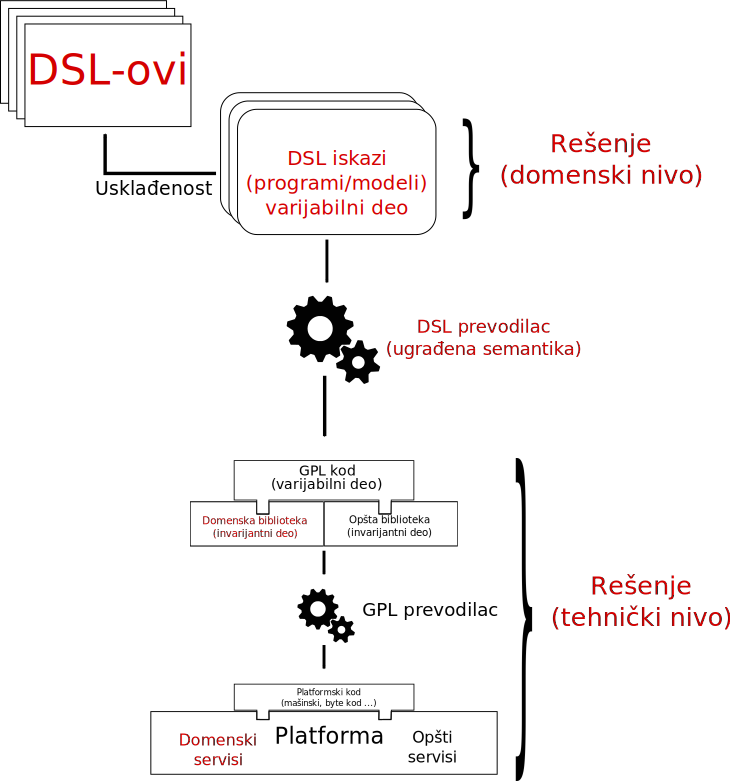
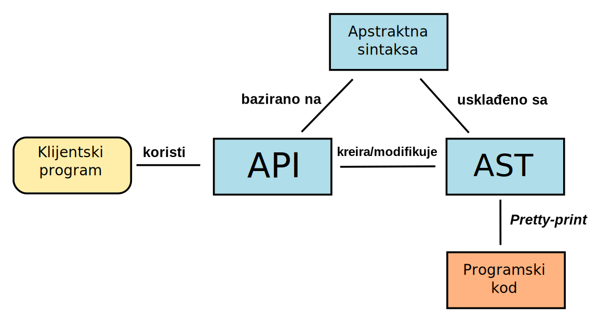
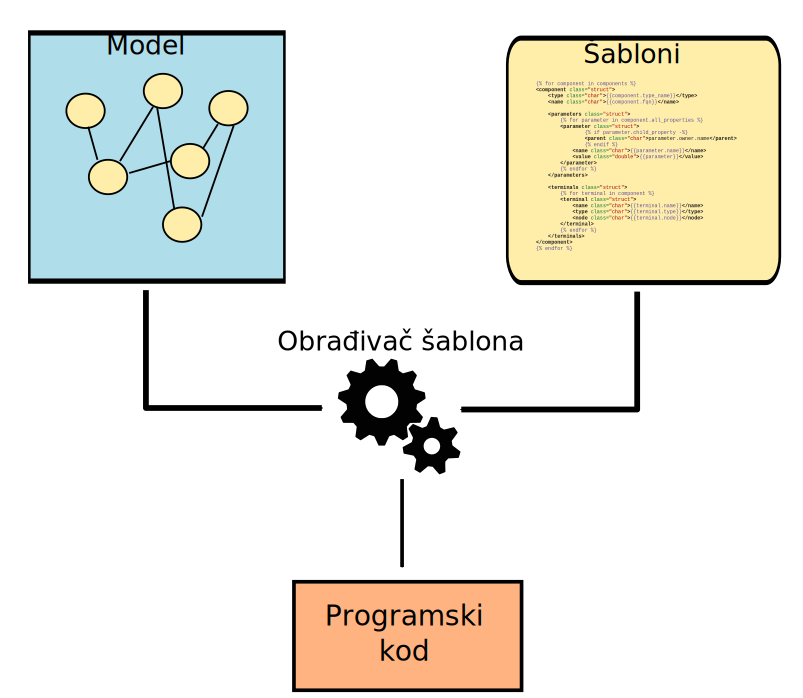
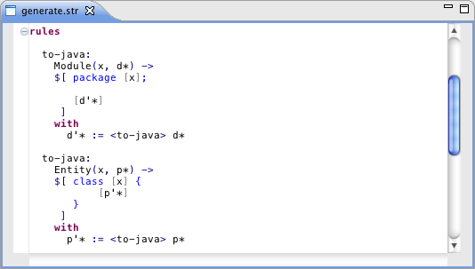
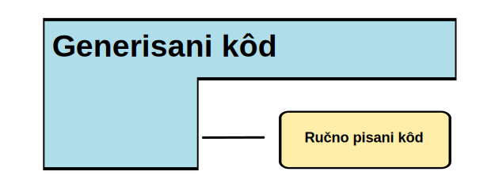
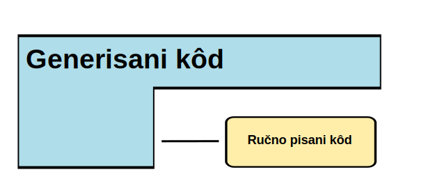
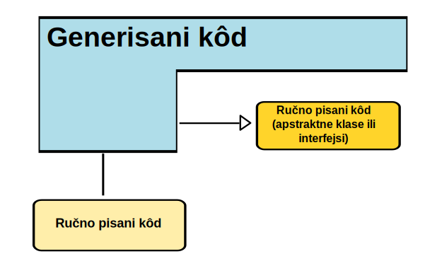
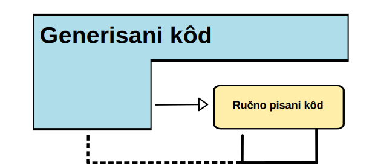
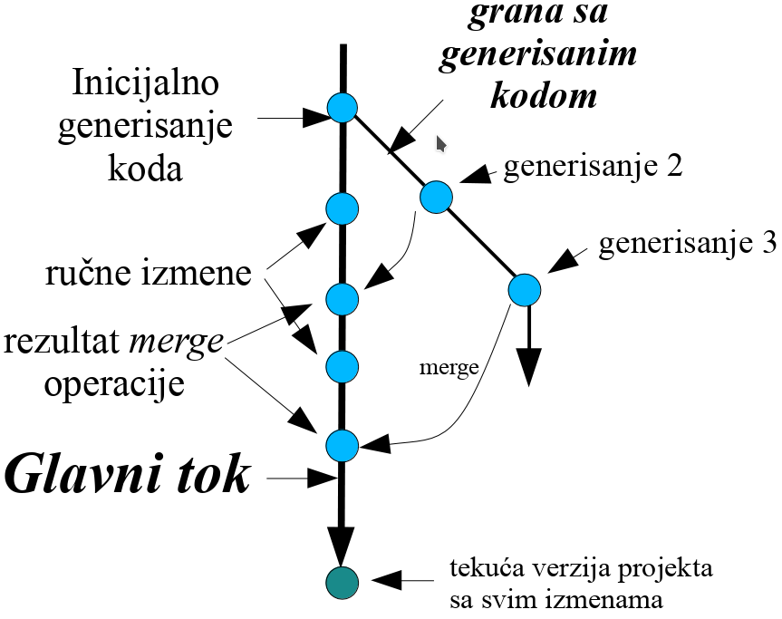
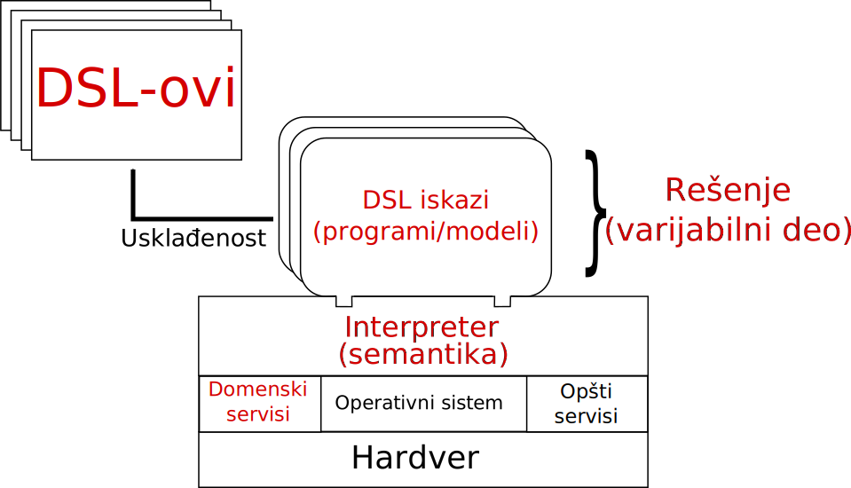

Kreirano 2023-12-01 Fri 10:12, pritisni ESC za mapu, m za meni, Ctrl+Shift+F za pretragu
Pragmatični načini definisanja:

print pristup - primerclass Class(object):
def __init__(self, name, attributes):
self.name = name
self.attributes = attributes
classes = []
classes.append(Class("Student",
[("String", "ime"),
("String", "prezime"),
("String", "brojIndeksa")]))
classes.append(Class("Predmet",
[("String", "naziv"),
("String", "nastavnik"),
("int", "ESBP")]))
ime_paketa = "fakultet"
print "package %s;" % ime_paketa
print
for cls in classes:
print "public class %s {" % cls.name
print
for attr in cls.attributes:
print " protected %s %s;" % (attr[0], attr[1])
print
for attr in cls.attributes:
print " public %s get%s(){" % \
(attr[0], attr[1].capitalize())
print " return %s;" % attr[1]
print " }"
print
print " public void set%s(%s %s){" % \
(attr[1].capitalize(), attr[0], attr[1])
print " this.%s = %s;" % (attr[1], attr[1])
print " }"
print
print "}"
print
package fakultet;
public class Student {
protected String ime;
protected String prezime;
protected String brojIndeksa;
public String getIme(){
return ime;
}
public void setIme(String ime){
this.ime = ime;
}
public String getPrezime(){
return prezime;
}
public void setPrezime(String prezime){
this.prezime = prezime;
}
public String getBrojindeksa(){
return brojIndeksa;
}
public void setBrojindeksa(String brojIndeksa){
this.brojIndeksa = brojIndeksa;
}
}


{% for component in components %}
<component class="struct">
<type class="char">{{component.type_name}}</type>
<name class="char">{{component.fqn}}</name>
<parameters class="struct">
{% for parameter in component.all_properties %}
<parameter class="struct">
{% if parameter.child_property -%}
<parent class="char">parameter.owner.name</parent>
{% endif %}
<name class="char">{{parameter.name}}</name>
<value class="double">{{parameter}}</value>
</parameter>
{% endfor %}
</parameters>
<terminals class="struct">
{% for terminal in component %}
<terminal class="struct">
<name class="char">{{terminal.name}}</name>
<type class="char">{{terminal.type}}</type>
<node class="char">{{terminal.node}}</node>
</terminal>
{% endfor %}
</terminals>
</component>
{% endfor %}
<html>
<head><title>First JSP</title></head>
<body>
<%
double num = Math.random();
if (num > 0.95) {
%>
<h2>You'll have a luck day!</h2><p>(<%= num %>)</p>
<%
} else {
%>
<h2>Well, life goes on ... </h2><p>(<%= num %>)</p>
<%
}
%>
<a href="<%= request.getRequestURI() %>"><h3>Try Again</h3></a>
</body>
</html>
<?php
$Fname = $_POST["Fname"];
$Lname = $_POST["Lname"];
?>
<html>
<head>
<title>Personal INFO</title>
</head>
<body>
<form method="post" action="<?php echo $PHP_SELF;?>">
First Name:<input type="text" size="12" maxlength="12" name="Fname"><br />
Last Name:<input type="text" size="12" maxlength="36" name="Lname"><br />
</form>
<?
echo "Hello, ".$Fname." ".$Lname.".<br />";
?>
</body>
</html>
<h1>Listing Books</h1>
<table>
<tr>
<th>Title</th>
<th>Summary</th>
<th></th>
<th></th>
<th></th>
</tr>
<% @books.each do |book| %>
<tr>
<td><%= book.title %></td>
<td><%= book.content %></td>
<td><%= link_to "Show", book %></td>
<td><%= link_to "Edit", edit_book_path(book) %></td>
<td><%= link_to "Remove", book, method: :delete, data: { confirm: "Are you sure?" } %></td>
</tr>
<% end %>
</table>
<br />
<%= link_to "New book", new_book_path %>
def compile(Entity e) '''
«IF e.eContainer.fullyQualifiedName != null»
package «e.eContainer.fullyQualifiedName»;
«ENDIF»
public class «e.name» «IF e.superType != null
»extends «e.superType.fullyQualifiedName» «ENDIF»{
«FOR f:e.features»
«f.compile»
«ENDFOR»
}
'''
def compile(Feature f) '''
private «f.type.fullyQualifiedName» «f.name»;
public «f.type.fullyQualifiedName» get«f.name.toFirstUpper»() {
return «f.name»;
}
public void set«f.name.toFirstUpper»(«f.type.fullyQualifiedName» «f.name») {
this.«f.name» = «f.name»;
}
'''
}

#include <stdio.h>
#define SLICES 8
#define ADD(x) ( (x) / SLICES )
int main()
{
int a = 0, b = 10, c = 6;
a = ADD(b + c);
printf("%d\n", a);
return 0;
}
.class fajlove..class fajlove.Generisani kôd poziva ručno pisani.

Ručno pisani kôd poziva generisani.

Generisani kôd nasleđuje apstraktne klase ili implementira interfejse (ručno pisane). Ručno pisani kod poziva generisani preko interfejsa ili apstraktnih klasa.

Ručno pisani kôd nasleđuje i redefiniše generisani.
Generisani kôd nasleđuje i poziva ručno pisani. Na primer, implementacija apstraktnih metoda u kojoj se koriste pozivi konkretnih metoda.
Generisani kôd nasleđuje ručno pisani i definiše apstraktne metode. Ručno pisani kôd poziva konkretne metode kao i apstraktne metode koje definiše generisani kod. Implementacija Template Method dizajn obrasca.


